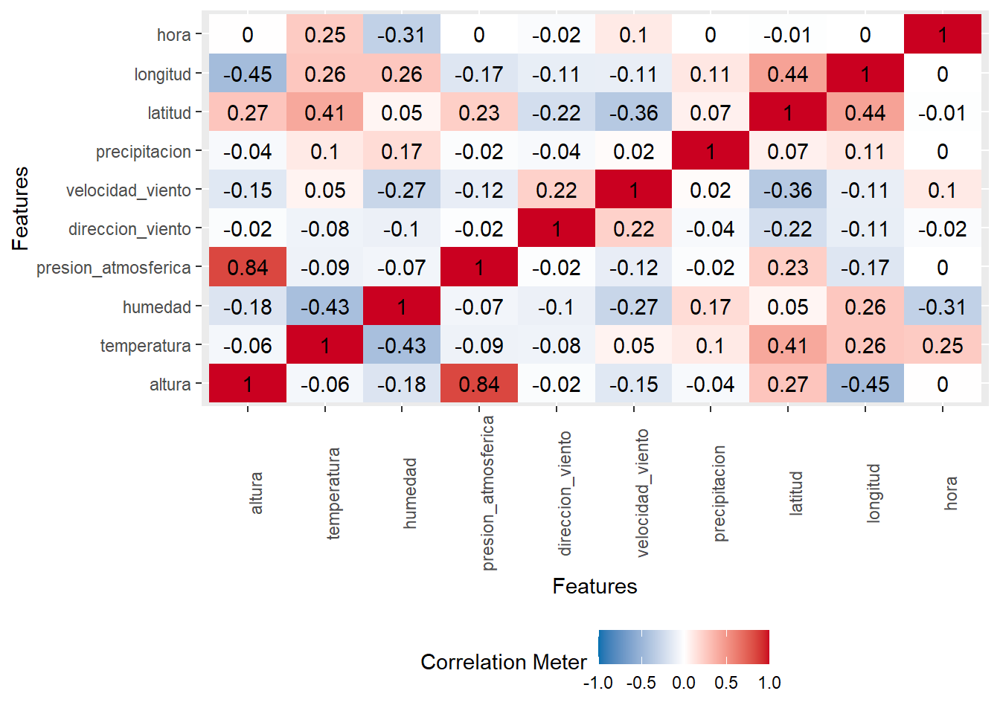

datos_precipitaciones$Fecha <-as.Date(datos_precipitaciones$Fecha, format ="%Y-%m-%d")df <- datos_estaciones %>%inner_join(datos_smn, by =c("Nombre"="NOMBRE")) %>%inner_join(datos_precipitaciones, by =c("Nro"="Estacion", "FECHA"="Fecha"))
# Convertir columnas a factordf$id_estacion <-as.factor(df$id_estacion)df$nombre_estacion <-as.factor(df$nombre_estacion)df$provincia <-as.factor(df$provincia)# Reemplazar los valores "\\N" por NAdf$precipitacion[df$precipitacion =="\\N"] <-NA# Convertir la columna a numéricodf$precipitacion <-as.numeric(df$precipitacion)
3 columns ignored with more than 50 categories.
id_estacion: 112 categories
nombre_estacion: 112 categories
fecha: 2450 categories
Código
plot_histogram(df)
Código
plot_correlation(na.omit(df), maxcat = 5L)
Warning in dummify(data, maxcat = maxcat): Ignored all discrete features since
`maxcat` set to 5 categories!

1.3 Limpieza de datos
Ejecutar el código
---title: "Trabajo Práctico 2 | Grupo 2" date: "r Sys.Date()" format: htmltheme: Cosmo toc: true toc-location: right number-sections: true code-fold: truecode-tools: truesmooth-scroll: truefig-align: center toc-depth: 3lang: eseditor: visual---```{r echo = FALSE, warning = FALSE, output = FALSE}# Limpieza de datos.library(dplyr)library(DataExplorer) # Para usar func plot_introlibrary(tidyverse)# Visualización de datos.library(VIM)# Carga de datosdatos_smn <-readRDS("data/datos_smn.rds")datos_estaciones <-read.csv("data/estaciones.csv")datos_precipitaciones <-read.delim("data/smn_precipitaciones-1991-2024.txt", sep =",")```# Trabajo Práctico 2Análisis Exploratorio de Datos de un Dataset Real## Carga y estructura de datos```{r}datos_precipitaciones$Fecha <-as.Date(datos_precipitaciones$Fecha, format ="%Y-%m-%d")df <- datos_estaciones %>%inner_join(datos_smn, by =c("Nombre"="NOMBRE")) %>%inner_join(datos_precipitaciones, by =c("Nro"="Estacion", "FECHA"="Fecha"))```Formato de columnas```{r}colnames(df)```Renombrar Columnas```{r}df <- df %>%rename( nombre_estacion = Nombre,provincia = Provincia,altura = Altura,id_estacion = Nro,latitud = Latitud,longitud = Longitud,fecha = FECHA,hora = HORA,temperatura = TEMP,humedad = HUM,presion_atmosferica = PNM,direccion_viento = DD,velocidad_viento = FF,precipitacion = Precipitacion..mm. )```Reorganizar Columnas```{r}df <- df %>% dplyr::select( id_estacion, nombre_estacion, provincia, altura, temperatura, humedad, presion_atmosferica, direccion_viento, velocidad_viento, precipitacion, latitud, longitud, hora, fecha )```Formato de datos```{r, output=FALSE, warning=FALSE}str(df)``````{r}# Convertir columnas a factordf$id_estacion <-as.factor(df$id_estacion)df$nombre_estacion <-as.factor(df$nombre_estacion)df$provincia <-as.factor(df$provincia)# Reemplazar los valores "\\N" por NAdf$precipitacion[df$precipitacion =="\\N"] <-NA# Convertir la columna a numéricodf$precipitacion <-as.numeric(df$precipitacion)```| Variable | Concepto | Tipo ||---------------------|-------------------------------|--------|| id_estacion | Identificador de estación | Factor || nombre_estacion | Nombre de estación | Factor || provincia | Provincia | Factor || altura | Altura sobre el nivel del mar | int || temperatura | Temperatura en UNIDAD ❓ | num || humedad | ❓ | num || presion_atmosferica | ❓ | num || direccion_viento | ❓ | num || velocidad_viento | ❓ | num || precipitacion | ❓ UNIDAD | num || latitud | Latitud | num || longitud | Longitud | num || hora | Hora | num || fecha | Fecha | Date |: Diccionario de variables## Identificación de errores```{r}# Verificar valores nulosdf %>%summarise(across(everything(), ~sum(is.na(.)))) %>%pivot_longer(everything(), names_to ="variable", values_to ="missing") %>%arrange(desc(missing))``````{r}# Visualizar valores faltantesplot_intro(df)```Almacenar variables categóricas y numéricas por separado.```{r}# Seleccionar columnas numéricasdf_numericas <- df %>%select(where(is.numeric))# Seleccionar columnas categóricas (caracteres o factores)df_categoricas <- df %>%select(where(~is.factor(.) |is.character(.)))``````{r}introduce(df)``````{r}plot_missing(df)``````{r}plot_bar(df)``````{r}plot_histogram(df)``````{r}plot_correlation(na.omit(df), maxcat = 5L)```## Limpieza de datos